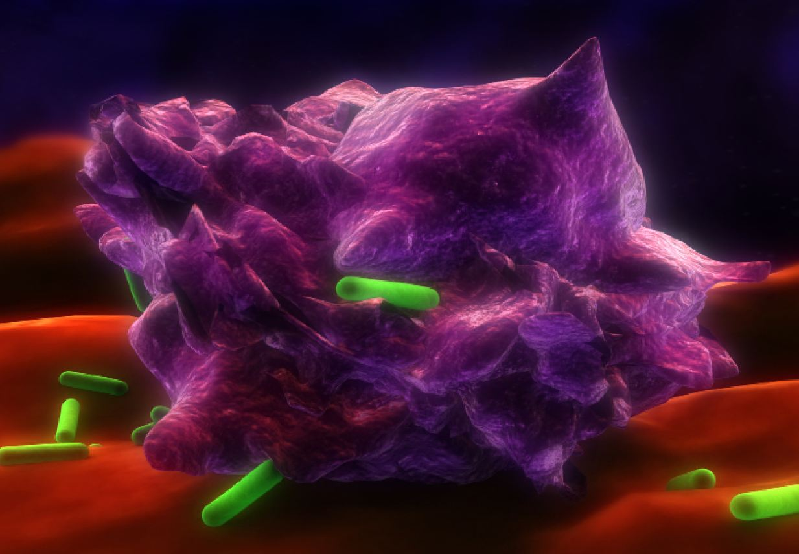

Starved to Life
Autophagy: a viable mechanism for prolonged life
Quang Nguyen
Fall 2008

Have you ever skipped a meal and been scolded for being unhealthy? Such
reprimands may no longer be warranted, as new discoveries suggest that
starving your cells for short, controlled periods of time may actually
have beneficial effects. Current research on autophagy, a process
activated during periods of cell stress and starvation, is providing
new information on this metabolic pathway that may increase longevity
and decrease risks for certain diseases. Recent studies demonstrate
that autophagy increases life expectancy and health in mice. This
suggests that controlled dieting and fasting, if done responsibly, may
have similar benefits for humans. When people age, their cells may be
too damaged to reproduce healthy copies. As a result, the cell may
either undergo apoptosis (programmed cell death), or autophagy-mediated
recovery wherein lysosomes degrade the damaged organelles. Alzheimer’s,
Parkinson’s, and many other neurodegenerative diseases can be
attributed to malfunctions of the autophagic pathway.
Autophagy is a nutrient-sensitive process in which
lysosomes in a cell degrade unnecessary, dysfunctional cell parts and
extracellular pathogens. Target of rapamyacin (TOR) kinase, a protein
regulating the pathway that controls autophagy levels, and the
downstream autophagy (ATG) genes, which encode proteins required for
macroautophagy, are both activated when the body senses the presence of
nutrient-deprived cells. When TOR kinase is activated, the main
functional unit of autophagy, the autophagosome, is expressed, and
basal levels of autophagy are increased both within a specific cell and
throughout the body. The autophagosome will then fuse with a lysosome
to degrade its contents.
Beth Levine, MD, and Guido Kroemer, MD, PhD,
University of Texas, Southwestern Medical Center, published their
research on the role of autophagy in different human diseases and how
it functions in different organs in the body in the January 2008 issue
of Cell. In their review, autophagy is shown to be actively involved in
reducing or preventing neuromuscular diseases, neurodegenerative
diseases, liver problems, and tumor formation, many of which augur
serious health consequences for people who are genetically predisposed
to such conditions. After undergoing the wear and tear of metabolic
processes – regardless of the presence of pathogens – the body becomes
immunocompromised and more prone to damage.
Autophagy functions to recycle old and damaged
organelles, thereby redirecting energy for the cell and maintaining its
condition. When an accumulation of potentially harmful aggregate
proteins exists, autophagy also functions in clearing these complex
masses through protein degradation via proteasomes, enzymes that break
down proteins. Properly controlled fasting for certain periods of time
can activate this metabolic pathway that will reduce, if not prevent
altogether, the likelihood of the development of certain medical
conditions that may be caused by such protein aggregates, thus
increasing lifespan. However, the act of fasting can also result in
side effects that may not make it a viable method to stimulate higher
levels of autophagy within the body.
Qing Zhong, MD, PhD, University of California,
Berkeley, researches autophagy and apoptosis, particularly in the tumor
suppressor p53 gene. He argues that while fasting may increase basal
levels of autophagy, other effects may outweigh its benefits. Nutrient
deprivation can produce several negative side effects when conducted on
any living organism. These effects were observed in humans through the
Minnesota Starvation Experiment, conducted during World War II and
published in The Biology of Human Starvation in 1950 by Ancel Keys et
al., to measure the effects of famine and the recovery rate from
starvation in Europe. Subjects of the experiment underwent 12 weeks of
standardized calorie intake, followed by 24 weeks of reduced
semi-starved calorie intake to emulate impoverished conditions in
Europe at the time. Subsequent steps involved 12 weeks of restricted
rehabilitation during which calorie intake was slightly increased, and
finally eight weeks of unrestricted rehabilitation. The resultant
psychological effects were disastrous, as several subjects were found
to be withdrawn, emotionally distressed or depressed, while many of
their metabolic processes such as heart rate and respiration were
impaired.
In addressing this problem, Zhong makes an
interesting proposition: while the act of fasting may initiate the
autophagic pathway, it does so mainly through activation of the TOR
kinase and ATG genes that lie downstream. Thus, pharmaceutical
companies can possibly design drugs to stimulate this pathway while
eliminating fasting as an autophagy sequence-initiator. Finding a drug
or an external regulator able to stimulate this pathway would decrease
the risk of several neurodegenerative diseases, as well as maintain
cell health, bypassing the harmful physical and psychological side
effects of starvation. The implications of these research findings are
significant in an increasingly health-challenged nation. By preventing
the accumulation of aggregated proteins and other potential dangers
leading to pathogenesis in humans, it is possible to prevent diseases
before they start. Eating healthy, or keeping a healthy level of
calories that maintains the autophagic process could promote
well-being, as well as an extended life span.
About the Author
Quang Nguyen is a first year majoring in Molecular and Cell Biology. He hopes to one day attend medical or graduate school.